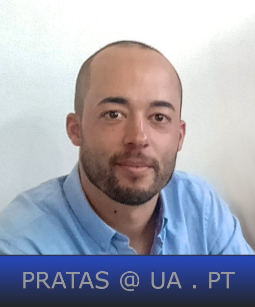

I am a computer scientist with leading research interests in computational biology, bioinformatics, and data compression. I hold an Information and Communication Technologies Degree from the University of Aveiro (Portugal), with a segment carried at the Pontifical University of Salamanca (Spain). After, I worked in the private sector for a couple of years. Then, I rejoined the University of Aveiro and completed the Ph.D. in Informatics (2016) and the PostDoc in Computer Science (2019). In 2019, I worked as a Bioinformatician at the University of Helsinki (Finland). Currently, I am an auxiliary Scientist/Professor at the DETI/IEETA of the University of Aveiro and an Invited Scientist at the Department of Virology of the University of Helsinki. My memberships include the Super Dimension Fortress, the APRP, and the ESCV.